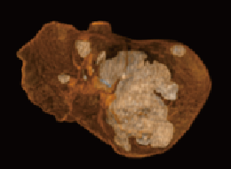
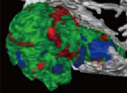
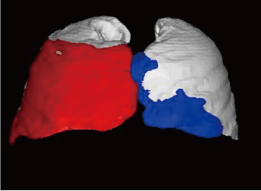
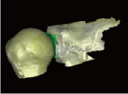

|  |  | |
|  |  |
3D Quantitative Imaging (3DQI) lab focuses on research and development of innovative image processing techniques for computerized quantification of tumor and organs. We have developed our in-house software platform - 3DQI, and a wide range of clinical-oriented organ-specific 3DQI applications.
Research and DevelopmentA set of innovative image processing methods have been developed on 3DQI platform including image segmentation, registration, morphological enhancement, shape detection, texture analysis, and quality validation. Based on image processing tools, we have developed our 3DQI software platform.
Clinical ApplicationsA set of clinical applications have been developed or prototyped, including